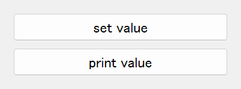
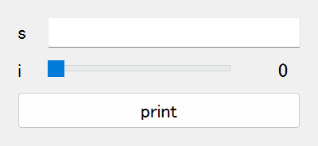
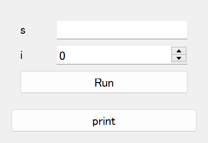
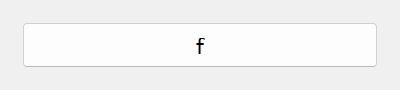
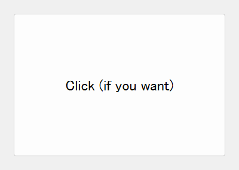

Quick Start
Basics
In magicgui, you can convert functions into widgets. For instance,
from magicgui import magicgui
@magicgui
def print_text(text: str):
print(text)
print_text.show()
will create a widget that is composed of a line edit (for the input argument text)
and a call button.
Similarly, with magicclass decorator, you can convert a Python class into a magicgui's Container widget and its methods appear as push buttons. When a button is
clicked, the corresponding magicgui will be popped up.
from magicclass import magicclass
@magicclass
class MyClass:
def set_value(self, value: str):
self.value = value
def print_value(self):
print(self.value)
ui = MyClass()
ui.show()

Note
Methods whose names start with "_" are considered as private functions so that they will not be converted into widgets.
Note
ui.print_value is a method, and ui["print_value"] is a button widget. To get the
FunctionGui widget, use get_function_gui function.
from magicclass import get_function_gui
print(get_function_gui(ui.print_value))
With exactly the same class design, you can also create a menu bar, a context menu or
a tool bar, using @magicmenu, @magiccontext and @magictoolbar respectively.
See here for more details.
Use Other Widgets in magic-class
Other magicgui's widgets can also be used inside magic-classes by using field.
from magicgui.widgets import LineEdit, Slider
from magicclass import magicclass, field
@magicclass
class MyClass:
s = field(LineEdit, label="Name:")
i = field(Slider, label="Age:", options={"max": 100})
def print(self):
print(f"{self.s.value} ({self.i.value})")
ui = MyClass()
ui.show()

If a method is decorated with @magicgui, it will directly added in the container
widget, in place of a push button. This is natural because decorated methods are no
longer functions, but FunctionGui widgets.
from magicgui import magicgui
from magicclass import magicclass
@magicclass
class MyClass:
@magicgui
def input_parameters(self, s: str, i: int):
self.s = s
self.i = i
def print(self):
print(f"{self.s} ({self.i})")
ui = MyClass()
ui.show()

GUI-specific Settings
In :mod:magicclass, GUI-specific settings are defined by decorators to keep code tidy.
"GUI-specific settings" include
- Widget options (such as the limits of a slider)
- Widget designs (such as the text of a button)
- Whether to be recorded to macro.
Parameter Options
In magicgui you can define parameter options with keyword arguments:
@magicgui(a={"widget_type": "Slider", "step": 10})
def f(a: int): ...
However, magic classes need another way to do this because magicgui will never be called by users.
magicclass uses set_options decorator instead.
from magicclass import magicclass, set_options
@magicclass
class Main:
@set_options(a={"widget_type": "Slider", "step": 10})
def f(self, a: int): ...
ui = Main()
ui.show()

Change Button Designs
Aside from those options of magicgui popup widget to run functions, you may also
want to change the design of button itself. magicclass uses set_design decorator
to do this.
from magicclass import magicclass, set_design
@magicclass
class Main:
@set_design(text="Click (if you want)", min_height=120)
def f(self): ...
ui = Main()
ui.show()

Post Initialization
Widgets are constructed only after __init__ is called. To change widget designs or
geometries, you should not call those methods in __init__ because they are not
constructed yet.
Similar to the builtin dataclass, __post_init__ method is used as the post
initalization procedure. It is called after widget is completely built.
@magicclass
class Main:
def __init__(self):
# self["func"] <-- this is not correct. Button "func" is not ready!
...
def __post_init__(self):
self["func"].min_height = 100
def func(self): ...
Code Completion
A problem of using decorators to overwrite classes is code completion. When you are
coding, the classes do not inherits magic classes yet, so IDE and console don't know
they will have attributes such as self.parent_viewer or self.name.
All the magic classes inherits MagicTemplate class. This class is designed in a
way which does not interfere with magic class decorators, while provides enough
information of typings and annotations.
from magicclass import magicclass, MagicTemplate
@magicclass
class MyClass(MagicTemplate): # inherit here
...
Macro Recording
Another outstanding feature of magic class is its macro recorder functionalities. Function calls and value changes in child widgets are all recorded and you can generate executable Python script at any time.
Recorded macro is stored in the macro attribute. You can generate Python script as
string just by passing it to str.
macro_string = str(ui.macro)
print(macro_string)
A macro editor widget is always tagged at macro.widget. It is a magicgui widget
so you can open it by show() method or directly append it to GUI.
ui.macro.widget.show() # show widget as a separate window.
ui.append(ui.macro.widget) # append macro as a child widget.
By default, the script shown in the macro editor is synchronized, that is, automatically updated whenever macro itself is updated.
You may want some functions not to record macro (such as a function that only shows
some information). It could also be redundant to record value changes of some widgets.
You can prevent macro recording with do_not_record decorator for methods
(or record=False argument for fields).
from magicclass import magicclass, do_not_record
@magicclass
class Main:
@do_not_record
def f(self):
"""this function will never be recorded"""
ui = Main()
ui.show()
Build Command Palette Widget Automatically
Command palette is very useful if you have many functions and widgets in your UI. Since each magic-class instance is well organized, you can build a command palette widget without any additional effort.
To use this feature, you need to install qt-command-palette package.
pip install qt-command-palette
You may want to use the command palette with the bind_key
decorator.
from magicclass import magicclass, magicmenu, bind_key
from magicclass.command_palette import exec_command_palette
@magicclass
class Main:
# many functions and widgets here.
@magicmenu
class SubClass:
def func_sub(self): ...
def func(self): ...
@bind_key("Ctrl+Shift+P")
def _show_palette(self):
exec_command_palette(self)
In the example above, two commands Main: func and Main.SubClass: func sub will be
registered.
Add Functions after Construction
Making a button or menu action dynamically is also useful, especially when you already
have a UI platform but you still want some extensions like plugin system. You don't have
to worry about that since magic class construction itself is dynamic. Just append
well-typed functions to magic class object.
def new_function(i: int, s: str):
...
ui.append(new_function) # then a proper widget appears in the GUI
Note
If you want to convert the function into a menu action, your code will look like this.
@magicclass
class A:
@magicmenu
class Menu:
...
ui = A()
ui.Menu.append(new_function)